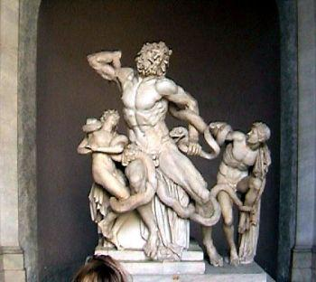
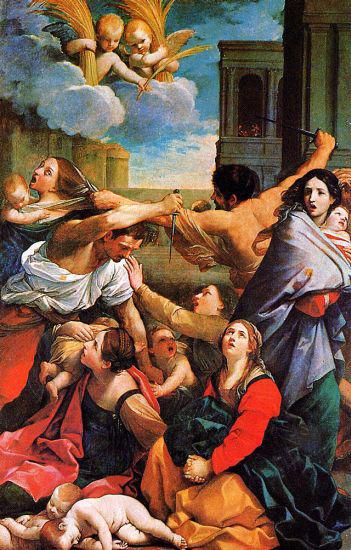
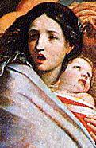
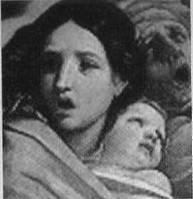

1.Plastik sanatlar
a- Mimari
Mimarî donmuş müziktir.11
Goethe
11 -Aslında Goethe'ye mal edilen bu sözün gerçek sahibi tam olarak belli değildir. Krşl.: s. 288.
KUNO FISCHER, Schopenhauer’in mimarî ve müzik hakkındaki teorilerinin tamamen orijinal olduğunu ve daha önceden hiç kimse tarafından ileri sürülmediğini yazar. Bu iki sanatı diğer güzel sanatlardan ayıran nevi şahsına münhasır özellikler de vardır ki bunlar da başka bir orijinallik arz ederler. Hiç şüphesiz Schopenhauer, bütün bu orijinallikleri keşfetmekle kendine estetik tarihinde fevkalâde önemli bir yer edinmiştir. Paul Valery, mimarî üzerine yazdığı Euphalinos adlı dramında Schopenhauer’i teyid edercesine dramın kahramanı Sokrates'e şunları söylettirir:
Güzel bir vücut baktırmak ister kendine, çok hoş bir an yaşatır bize: bu tabiatın bir ayrıntısıdır ki sanatçı mucize kabilinden onu durduruvermiştir... Ama müzik ile mimarî bize kendilerinden çok başka şeyler düşündürtürler.
Birbirine taban tabana zıt iki sanat alanında orijinal fikirler ortaya koymak ve estetik teoriler inşa etmek pek kolay olmasa da Schopenhauer’in paradoks tabiatına uygundur. İrâdenin en ağır ve en düşük seviyeden tecelli ettiği ve bir dünya Idee'si olarak görüntüler âlemine düştüğü estetik alan, Schopenhauer'a göre, mimarîdir. Mimarînin ağırlık, katılık, büyüklük, cesamet ve mekân realitesi göz önünde bulundurulduğunda, Schopenhauer’in neden mimarîyi plâstik sanatların başında mütalaa ettiği anlaşılmış olur. Schopenhauer, mimarîde kullanılan maddenin yahut materyalin asıl güçlerini, "tabiatın temel bas tonları" olarak değerlendirir. Maddenin içinde çatışma halinde bulunan bu iki güç, yer çekimi (ağırlık) ve dirençtir. Yerçekiminden dolayı cisimler düşer, aşağı doğru bir baskı uygular, bir yük gibi ağırlık verirler. Buna karşılık maddede mündemiç olan direnç sayesinde o cisim, söz konusu baskıya ve ağırlığa karşı koyar ve şayet yük ve direnç arasındaki dağılım yeteri kadar organize ise onları taşıyabilir. İşte mimarîdeki estetik bu güçler arasındaki çatışmanın şiddetinden doğmaktadır. "Doğrusunu söylemek gerekirse," diyor Schopenhauer, "güzel dediğimiz mimarinin uyandırdığı ilgi, tek başına yer çekimi ile direnç arasındaki çatışmadan meydana gelmektedir. Bu çatışmayı karmaşık ve tamamıyla açık bir tarzda belirtmek... İşte mimarinin görevi budur."12
12- Prof. Dr. Yalçın Koç, Türkiye Günlüğü dergisinin 84. sayısında neşrettiği Anadolu Mayası başlıklı yazısında harikulade bir sezişle "maya", "mayalama" ve "mayalanma" fikrini mimariye taşımakta ve Anadolu mayasında zıtlığın nasıl giderildiğini ve "yapı"nın "esere" nasıl dönüştüğünü anlatmaktadır. Koç'un bu konudaki mülahazalarına içtenlikle katılıyor ve bu felsefî değerlendirmenin ilgili kısmım önemine binaen buraya aktarıyorum:
[ "Yapı" hakkında "yığınsal birey"in "estetik" cihetten hissettikleri, bu "yapı"yı bir "eser"e dönüştüremez; çünkü, bu estetik hissiyat bizzat "yapı"da bulunmaz. "Estetik hissiyat", bu diyar itibariyle, "yapı"nın herhangi bir anlamda bir "unsur"u değildir. "Hissedilen", yani "estetik duygu", sadece bunu hissedene "mahsustur". O zaman, "yapı"ya ait olmayan bu "şey" nasıl olur da "yapı"yı "eser"e dönüştürür? Şimdi, kısaca, Anadolu mayasında "zıtlığın" nasıl giderildiğini ve bunun neticesinde "yapı"mn "eser"e nasıl dönüştüğünü ele alalım. Bunun için önce "yapı"yı yapan, inşa eden "usta"ya bakmamız gerekir, çünkü "yapı", bu itibarla sadece "bağlanmış malzeme"den ibaret değildir.
"Bağlanmış malzeme"den mürekkep bir "yapı"nın esası, "usta"sıdır. "Usta"yı, "yapı"da teşhis etmek, "aşma" sorunu çözmenin, yani "şey"in dayandığı "zıtlığın" giderilmesinin ilk adımını oluşturur. (...)
Tekrar edelim: İnşa edilmiş "yapı"nın "eser"e ''dönüşmesi", "yapı"nın, algılayanda "estetik bir duygu"nun ortaya çıkmasına yol açması neticesinde meydana gelmez. "Yapı"yı, "eser"e dönüştüren bazı "iz"lerin, "yapı"da bulunması gerekir. Bu "iz"ler, ne "yapı"nın "malzeme"si, ne de bu malzemeye verilen "form"dur. Bir "yapı", "ustalının bu yapıdaki "iz"i sebebiyle "eser"e dönüşür. Bir "yapı"yı, "eser"e dönüştüren bu "iz"i "yapı"da ortaya çıkarmak, Grek-Latin-Kilise diyarının esası ve fikriyatı itibariyle mümkün değildir. An, önce gömecini yapar; gömecine koyduğu balı "mühürleyerek" işini tamamlar.
"Yapı"yı, "canlandırarak" "eser"e dönüştüren, "usta"sından "yapı"ya geçmiş olandır; yani, "usta"sının "mührü"dür. "Eser"i, "insan" ile bağlantılı kılan bu "mühür"dür; algıda ortaya çıkan "sübjektif esastaki "estetik duygu" değil.
"Usta"nın "eser"deki "mührü", "usta"nın "aidiyet"i ve "esas"ı itibariyle farklılıklar gösterir; bu farklılıklar, açık bir şekilde "eser"de ortaya çıkar.
Anadolu mayasındaki "usta" ile Grek-Latin-Kilise diyarının "usta"sı, bizzat kendi yaratılışları itibariyle, yani "insan" olarak, aynı imkânlara sahiptir. Ancak, bu "usta'lar, "ustalık"ları itibariyle "aidiyet"lerine bağlıdır; yani, Anadolu mayasında "usta", "ferdi birey" ve Grek-Latin-Kilise diyarındaki ise, "inşa tekniği" hangi seviyede olursa olsun, "yığınsal birey"dir. Bu farklılıkları kısaca da olsa 'Anadolu Mayasında İnsan" başlıklı bölümde anlattık.
(...)
Anadolu mayasında "eser"in "ziyaret edilerek" algılanması hususu, "mimari yapılar" itibariyle daha kolay kavranılabilir, çünkü "mimari yapı"nın "iç"ine girilir ve "dış"ında dolaşılır. "Resim" için de, "müzik" için de durum aynıdır.
"Ziyaret edilen", esas itibariyle, orada bıraktığı "mührü" vasıtasıyla o "eser"in "usta"sıdır; "yapı", sadece bu "ziyaret"e imkan hazırlamıştır. Anadolu mayasındaki "usta"nın, "yapı"da bıraktığı "mührü", "gönlünden gelmiş olan" dır. Böyle bir "iz"in esası "zıtlık" değil, "zıtların birliği" dir; bu "birlik", malzemenin bağlanışı neticesinde ortaya çıkan "zıtlığı giderir" ve dolayısıyla de "aşar". Bu yolla, "yapı", bir "eser"e dönüşür.
Örnek olarak, Koca Sinan Usta'yı verelim. Koca Sinan Usta'dan geriye kalan hiçbir "plan" yoktur; "plan'ların saklanıp sonra da ortadan kaldırıldığına dair bir rivayet de mevcut değildir.
Yapıların Koca Sinan Usta'nın elindeki inşası, adeta, bir "tambur"un, bir "ney"in taksim geçmesine benzer. Ortaya çıkan "eser", sanki hem "ora"dadır hem değildir; hem "temel"leri üzerine oturur, hem yükselir; "ora"da değilmiş gibi durur ama ortadan kaldırırsan "o yer"in kolu kanadı kırılır, "o yer" olmaktan çıkar. "İç"i aslında "dış"ıdır, "dış"ı da "iç"i; çünkü hem "iç"i hem de "dış"ı aslında ustasının "iç"idir.]
Güzel sanatların hepsinde olduğu üzere mimarîde de aslolan Ideedir. Estetik beğeni tamamen bu Ideeye istinat etmektedir. Peki, ama mimarîde Platonik Ideeyi nerede aramak lâzımdır? Diğer güzel sanatlara kıyasla mimarînin çok önemli bir mekân realitesi olduğu ve çok malzemeye ihtiyaç duyulduğu göz önünde bulundurulursa, acaba mevzubahis Idee mekân tasarrufunda mı, yoksa geometrik yapıda mı yatmaktadır? Schopenhauer mimarîde Idee'nin "biçimde, oranda ve simetride" olmadığını, bilakis "en alt tabii basamaklar olan ağırlık, katılık ve uyumda" yattığını söyler. Buna göre estetik mimarînin asıl hedefi bu Ideeyi, yani ağırlık ve direnç arasındaki tezadı, gerilimi olabildiğince yansıtmaktır.
Estetik mimarîde direncin gücünü sütun; ağırlığı, yükü ise kiriş temsil eder. Sütun hem zarafeti ile ve hem de fonksiyonu gereği mimaride olabildiğince önemlidir. Öylesine ki, bir taraftan sütunların yükünü dağıtmak, öte yandan da sütunların taşıdıkları ağırlığı ön plana çıkarmak üzere estetik gayeye uygun olarak sütun başlıkları yapılmıştır. Buna ilaveten sütunların dağılımı, aralarındaki mesafe, yükseklik ve çaplarının birbirine oram estetik mimarî için vazgeçilemez unsurlardır. O yüzden Schopenhauer, mimarî bir eserde sütunların düzenini ve sıralanışını "mimarînin temel basso"su olarak adlandırır. Bu bağlamda unutmamak lazımdır ki, ağırlık ve direnç arasındaki ilişkiyi en mükemmel biçimde sütun ile kiriş arasındaki irtibat yansıtır. Taşıyıcı bir sütunun yetkinliği direnç gücüne ve rijid olmasına bağlıdır; kirişte ise ağırlık ve yükün sütunun direncine oranı önemlidir. Mimarîde gaye direnç ile ağırlığı dengelemek yani sütun ile kiriş arasındaki gerilimi azami olarak göstermektir. Bu bağlamda Schopenhauer bir gerçeğin daha altım çizmektedir. Şöyle ki, onun kanaatine göre, mimarîde direncin sembolü olan sütun Idee'si, ağırlığı temsil eden kiriş olmaksızın asla var olmayacaktı. Schopenhauer, Yunanlıların sütun fikrine insandan hareketle ulaştığını ve dorik Yunan mabetlerinin böyle inşa edildiğini söyler. Ancak filozof, Kuno Fischer'in vurguladığı üzere, dorik sütunların asıl mucidinin kadim Mısırlılar olduğunu bilememiştir.
Tüm bu güçler arasındaki oranların yetkin bir biçimde gösterilmesi ve konkre olarak gözler önüne serilebilmesi için mimarî eserin inşa edildiği malzemenin kalitesi ve özellikleri ile bu eserin boyutlarının kayda değer büyüklüğü göz ardı edilemez. Demek oluyor ki güzel bir mimarî eserde kullanılan malzeme katı, dayanıklı ve güçlü olmak durumundadır; zira ancak fevkalâde dayanıklı ve katı bir mermer yerçekimi ile direnç arasında tezadı mükemmel olarak gösterebilir. Tabii direnç ile ağırlık arasındaki ilişkiyi hakkıyla yansıtabilmek için rölatif büyük bir mekâna ihtiyaç vardır. Bu anlamda mimarî aslında bir mekân realitesine dayanır ve gerçek olarak bir mekân tasarrufudur. Bunun da ötesinde mimarî bir mekân yaratma teşebbüsüdür. Mimarlar bir taraftan mekân tasarrufu yaparken mekâna yeni mimarî yapılar yerleştirirken, diğer taraftan da yeni mekânlar yaratırlar; içinde yeni hayatların yaşayabilecekleri, çalışabilecekleri ve belki de yeni mimarî eserler yapacakları mekânlar. Aslında mimarî münferit veya kolektif mekânlar yaratma sanatıdır. Zira mimar ya münferit yahut kolektif hayatlar için yeni ve boş mekânlar yaratır. Bunun aksini düşünmek mimarîyi bir mekân işgaline dönüştürür ki bu, mimarîde estetik endişeleri tümden hiçe saymak demektir. Oturduğumuz mahallelere bir göz atacak olursak nasıl bir mekân işgaline ve mimarî kirliliğe maruz kaldığımız bütün dehşetiyle görülebilir. Bu kirliliğin sebep olduğu sosyal sefalet ve ahlâkî yozlaşma da başka bir kirlilik.
O itibarla bir milletin mimarîye atfettiği önem onun mekâna bakışını ele verir; mekâna ve mimarîye yüklediği değer ise onun hayat ve sanat kalitesinin bariz bir belgesidir. İnsanların yaşadıkları mekânlar onların tabiata, hayata, hürriyete ve medeniyete nasıl baktıklarını gösterir. Sözgelimi faniliğin bir sembolü gibi inşa edilmiş küçük ve daracık ahşap evlerde oturan, yahut hiçbir mimarî değeri bulunmayan eciş bücüş betonarme binalarda hayatını geçiren toplum fertleriyle; mekâna, çevreye, yeşile, denize ve ışığa değer veren, insanın estetik mekân yaratma kabiliyetine sahip bir varlık olduğu esprisini göz ardı etmeyen ve gerçekten estetik endişelerle inşa edilmiş geniş ve ferah mekânlardan oluşan, sağlam, yüksek ve havadar binalarda hayatlarını geçiren insanların hayata ve hürriyete bakışı pek tabii aynı değildir. Unutmamak gerekir ki mimarîde estetik endişe ile fayda birbirini dengelemek durumundadır. Aksi halde hedefi yeni estetik mekânlar yaratmak olan mimarî sonunda bir mekân ve çevre tahribatına dönüşüverir. Bu bağlamda şunu da söylemekte sabırsızlanıyorum: güzel mimarî eserler, gayelerine uygun fonksiyonlarını icra etmekle kalmazlar, aynı zamanda estetik zevklerimize de yön verirler. O yüzden Winston Churchill, "Önce biz yapılarımızı şekillendiriyoruz, daha sonra da onlar bizi şekillendiriyor" derken ne kadar haklıdır.
Her şeyden önce bir binanın ana hatları, cesameti, kütlesi ve mekânda kuruluş tarzı insanı derinden sarar. Öte yandan mimarî eserdeki ahenk ve bütünlük estetik bir ayrıntı değil, bilakis mimarî eserin vazgeçilmez karakterini teşkil eder. Binanın cephesindeki sadelik ve bütünlük tamamen estetik mimarîye aittir. Öylesine ki Paul Valery, gerçek bir mimarî eserin cephesinin "terennüm edebileceğini" dahi söylemiştir.
Şu da var ki mimarînin mekânla olan ilişkisini diğer güzel sanatlarda görmek mümkün değildir. Güzel mimarî mekâna öylesine yerleştirilir ki onu görmememiz, görmeden önünden geçmemiz mümkün değildir. Oysa diğer güzel sanatlarda böyle bir durum vaki değildir. Güzel bir şiiri duymamış olabiliriz, muhteşem bir tabloyu görmemiş olabiliriz. Yahut bir heykeli bulunduğu kapalı salonda ziyaret etmemiş de olabiliriz. Ancak büyük bir mimarî eseri, sözgelimi bulunduğu mekânı ihtişamıyla dolduran Ayasofya'yı, Süleymaniye'yi yahut Sinan'ın ustalık eseri olan Selimiye'yi görmememiz veya görmemezlikten gelmemiz mümkün mü hiç. O yüzden Schopenhauer der ki, "Estetik bir etki yapabilmesi için, mimarî eserlerin daha ziyade olabildiğince büyük olmaları gerekmektedir; evet, hatta bunlar hiçbir zaman yeteri kadar büyük olamazlar, fakat buna karşılık pek kolay çok küçük olabilirler. Hatta diğerleri sabit kalmak kaydıyla estetik etki, binanın doğrudan doğruya büyüklük ölçülerihde yatmaktadır; çünkü yalnız büyük bir kütle yerçekiminin etkisini göze çarpacak bir biçimde ve olabildiğince güçlü verebilir. Böylelikle tabiatın temel güçleri olan zıtlık ve' çekişmenin yapı sanatının asıl estetik malzemesini teşkil ettiği ve bunun da\ tabiatı gereği, görünebilir ve hissedilebilir olabilmesi için büyük kütlelere ihtiyaç duyduğu yolundaki görüşüm bir kez daha teyit edilmiş oldu."
Mimarî eserdeki büyüklük ve ihtişam, ferdiyet üzerinde iki türlü müessir olmaktadır. Estetik kanunlar üzerinde yükselen büyük bir mimarî eser, estetik temaşa esnasında sağladığı estetik hazla bireyi büyüleyip ferdiyetini yok eder. Diğer taraftan ne olursa olsun büyük bir mimarî eser, kişiliğimiz üzerinde ezici, küçültücü ve yok edici bir etkiye sahiptir. Büyük bir mimarî eserle karşılaştığımızda, onun ihtişamı ve yüceliği karşısında ferdî varlığımızın küçüldüğünü ve acz içerisinde kaldığımızı hissederiz. Aslında bu durum, Schopenhauer’in özellikle vurguladığı principium individuationis (ferdîleşme prensibi)'in aşılmasına yardımcı olmaktadır. Ömer Naci Soykan, Mimarlık-Felsefe İlişkisi başlığı altında kaleme aldığı yazısında mimarî eserlerin bu özelliği ile alakalı olarak şöyle demektedir:
Tanrı ya da tanrılar adına inşa edilen tapınakların yüceliği karşısında insan, ezilir, kendini hiçler, tapınırken, bunun mimarlık sanatının bir hüneri olduğunu aklına bile getiremez.
Yukarıda Schopenhauer, mimarîde Platonik Idee "biçimde, simetride ve matematik büyüklüklerin birbirine oranında" değil, bilakis ağırlık ve direnç arasındaki gerilimdedir derken, matematik oranların mimarî estetikte bir fonksiyonu olmadığını kastetmiyordu. Pek tabii mimarîde geometrik oranlar estetiğin vazgeçemeyeceği bir fonksiyon icra ederler. Ne var ki güzel mimarîde matematik oranlar hiçbir zaman gaye olamazlar. Bunlar mimarî eserin mekânda bütün olarak daha kolay belli olması ve daha üstün bir görünüm kazanması için bir araç, bir vasıta görevi üstlenirler. Bunun ötesinde eğri çizgiler, anlamsız kıvrımlar, parçalı kapı kemerleri, helezonlar ve lüzumsuz ayrıntılar tamamen zevksiz bir mimarîyi daha da zevksiz hale sokarlar.
Burada şu hususu belirtmek ihtiyacını duyuyorum ki, felsefeyi bir zihin lüksü veya soyut bir düşünce faaliyeti olarak görmeyen Schopenhauer, estetik mimarîyle ilgili felsefesini temellendirirken klasik Yunan mimarîsini esas alır. Bununla da kalmaz klasik Yunan mimarisinden talihsiz bir sapma olarak gördüğü Batı'nın gotik tarzı mimarisini "barbarca bir pervasızlık" olarak değerlendirir. Şimdi bu değerlendirmeyi kendisinden dinleyelim:
Hatırlatmaya bile ihtiyaç duymuyorum ki, mimarîyle alakalı tüm bu değerlendirmelerimde sadece antike mimarîyi göz önünde bulundurdum, yoksa şu Sarasanî [Arap, Müslüman] kökenli olan, Gotlar tarafından evvela İspanya'ya ve oradan da Avrupa'ya ithal edilen ve Gotik diye adlandırılan mimarîyi değil. Belki kendi tarzında bunun da az buçuk bir güzelliğinin olduğu inkâr edilmemelidir. Ne var ki onu, bununla eşdeğer olarak karşı karşıya getirmeğe gayret edilirse, bu durum barbarca bir pervasızlık olur ki buna katiyetle müsaade etmemek lâzım gelir. İhtişamlı Gotik eserler seyredildikten sonra, kaidesine uygun olarak antike bir üslûpla inşa edilen bir bina ruhumuz üzerinde ne kadar hoş bir tesir icra eder. Burada yalnız onun doğru ve gerçek olduğunu derhal hissederiz. Meşhur Gotik katedrallerimizden birisini Antike bir Yunanlıya gösterseydik ne buyururdu acaba? Barbarlık! Gotik eserlerin hoşumuza gitmesi büyük ölçüde düşünce çağrışımlarından ve tarihî hafızadan kaynaklanır ki bu sanata yabancı pir duygudur. Asıl estetik gaye, anlam ve mimarî tema hakkında söylediklerimin tümü, bu eserler mevzubahis oldukta geçerliliğini kaybeder. Zira burada açık duran kiriş kaybolup gitmiş, bununla birlikte de sütun kaybolmuştur: ağırlık ve katılık arasındaki mücadeleyi, gerilimi gözler önüne sermek üzere, yük ve direnç arasındaki dağılım ve organize, burada [Gotik mimarîde] konu olmaktan çıkıvermiştir.
Görüldüğü üzere Schopenhauer, Avrupa'ya hâkim olan Gotik mimarîye karşı tamamen menfî bir tavır takınmaktadır. Buna karşılık klasik Yunan mimarîsini ve özellikle "sütun"un keşfini - Dorik üslûbun aslında kadîm Mısır kökenli olduğuna hiç değinmeden, belki de bunu hiç bilmeden - tabiatın karşısında insanın bir zaferi olarak yüceltmektedir. Schopenhauer’in böylesine meftun olduğu ve estetik mimarînin numûne-i imtisali olarak takdim ettiği klasik Yunan mimarisi, başlangıçta Goethe'nin nez-dinde takdir bulamaz. Faust'un müellifi, Schopenhauer’in bu konudaki görüşlerinden belki haberdar bile değildir; ancak, Grek estetiği ve mimarîsi konusunda öteden beri otorite olan Winckelmann'ın "Asil bir sadelik ve sakin bir büyüklük" olarak yücelttiği klasik Yunan mimarîsine Faust'un ikinci bölümünün başlarında itiraz eder. Goethe, Faust'un bu bölümünde Gotik sanatı tercih eden romantik Mimara, sahnede gördüğü klasik bir Yunan mabedini şöyle tenkit ettirir:
architekt (Mimar)
Das wâr' antik! leh wüsst' es nicht zu preisen, Es sollte plump und überlastig heiBen.Roh nennt r.ıan edel, un-behülflich groB. Schmalpfeiler lieb' ich, strebend, gren-zenlos; Spitzbögiger Zenit erhebt den Geist; Solch ein Gebâu erbaut uns allermeist.
Hele şu antika dediklerine bakınız! Doğrusu bunu övmeyi bilmem.
Buna biçimsiz sakil demek daha doğru olur.
Kabaya asil, hantala da cesim diyorlar.
Ben ince ve uzun sütunlara bayılırım.
Bunların sivri sivri uçları, insanın ruhunu yükseltir.
Bize daha ziyade böyle bir bina inşa ediniz.
Goethe, gençlik yıllarında (1772) Von der deutschen Baukunst =Alman Mimarisi başlığıyla kaleme aldığı bir yazısında da Gotik mimarînin ruhu yücelttiği, içe ferahlık verdiği gibi gerekçelerle gotik mimarîyi övmüş, hatta "gotik" yerine "Alman" adını kullanmak suretiyle ikisini aynîleştirme yoluna dahi gitmiştir. Ne var ki şair, daha sonraları bu görüşlerinden tümden vazgeçmiştir. Bu meyanda Goethe, 1810 yılında Kont Reinhard'a şu satırları yazmıştır:
Eskiden ben de bu şeylere karşı büyük bir ilgi duyar ve bugün dahi cephesini Kolonyadakinden daha muhteşem bulduğum Strassburg kilisesine karşı adeta tapar derecesinde bir sevgi beslerdim. Fakat anlayamadığım garip bir şey varsa o da bu besbelli sarasanî mahsulünü esasında Alman toprağından çıkmış gibi göstermeğe çalışan şu bizim Alman vatanperverliğidir.
Dahası var: Antik Yunan mimarî tarzını hakkıyla tanıma fırsatı bulan Goethe, Roma'daki Antonius ve Faustina kilisesini tasvir eden yazısında şöyle demektedir:
Bu, gerçekten bizim vesveseli gotik ruhunun, dirsekli raflar ve sepet başlı direklere dayanan birbiri üzerine yığılmış mütebasbıs ve cicili bicili azizlerinden tamamen ayrı bir şey... Bizim tütün çubuğunu andıran sütunlarımızdan, oyalı ve nakışlı sipsivri kulelerimizden bambaşka bir şey. Allaha şükür ben bunlardan artık şifayab oldum.
Görüldüğü üzere gençlik yıllarında estetik mimarî olarak Gotik mimarîyi tercih eden Goethe, olgunluk döneminde Antik Yunan mimarisini daha çok mizacına uygun bulmuştur. Bu itibarla estetik mimarî konusunda da fikirlerine pek itibar edilen Goethe, dorik sütunları esas alan Antik Yunan mimarîsini değerlendirirken, kaderin bir cilvesi olarak, Schopenhauer ile aynı çizgiye gelivermiştir. Peki, ama neden Schopenhauer Gotik mimarîye bu derece karşıdır? Ateist bir filozof olduğu için bu konuda onun bir saplantı içerisinde olduğunu söylemek, fikirlerini görülmedik bir vuzuh ve cesaretle söyleyen ve yeri geldiğinde Kitab-ı Mukaddes'ten iktibas ettiği ayetlerle desteklemekte ve delillendirmekte hiçbir beis görmeyen filozofa hakikaten büyük bir haksızlık olurdu. Kanaatimizce onun bu konudaki itirazları tamamen estetik endişelerden kaynaklanmaktadır. Binaenaleyh Schopenhauer, bu meseleyle alakalı yorumlarını ve itirazlarını teknik ve estetik sınırları tecavüz etmeksizin temellendirmektedir. Kendisine kulak verecek olursak:
Antik mimarîde basınç ve tüm uğraş, tıpkı aşağıdan yukarı doğru olduğu gibi, yukarıdan aşağı doğru da ortaya konulup temsil edilmişken; burada [gotik mimarîde] kesinlikle aşağıdan yukarı doğru bir güç hâkimdir. Bu surette de kristale analog bir durum ortaya çıkmaktadır ki, bunun belirmesiyle birlikte aynı zamanda ağırlık aşılmaktadır. Şimdi Gotik mimarî anlayışına ve temel fikrine bir anlam vermek ve bunu büsbütün antik mimarînin muadil karşı kutbu olarak ileri sürmek istersek, bu durumda hatırlanmalıdır ki, antik mimarînin böylesine alenî ve naif biçimde ortaya koymak istediği ağırlık ve direnç arasındaki çatışma halis ve gerçek olarak tabiatta kurulmuş durumdadır. Buna karşılık katılık marifetiyle ağırlığın tümden aşılması sadece bir görüntüden, yanıltarak onaylatılan bir hayalden ibaret kalır. Burada verilen temel düşüncelerden ve yukarıda tebarüz edilen özelliklerden bizzat kendisine has olan esrarengiz ve fizik ötesi karakterin ortaya çıktığı üzere, bunu herkes gayet basit bir şekilde sarih olarak anlayabilir... Buna karşılık Gotik kiliselerin ışıltılı tarafları iç kısımlarıdır; çünkü burada ince, kristali andırırcasına yukarılara doğru yükselen direkler tarafından taşınan, daha yukarılara çıkarılan ve yük azalıp kayboldukça ruh üzerinde ebedî emniyet hissi uyandıran çapraz kemerin etkisi yayılır. Fakat zikredilen fena durumların kısmı ekserisi dışarıda kalır. Antik binalarda ise dış taraflar daha avantajlıdır, çünkü orada destek ve yük daha iyi görülür; buna karşılık iç kısımda basık tavan, biraz boğucu, sıkıcı ve monoton şey barındırır. Eskilerin mabetlerinin büyük bölümünde, keza dıştaki birçok ve büyük müştemilatta, asıl iç kısım küçüktür... Buna şunu da ilave etmek gerekir ki, kadîm halklar, tıpkı güneyli halklar gibi, açık havada yaşıyorlardı; kuzeyli milletler ise Gotik mimariyi tercih ediyorlardı.
Böylece Schopenhauer, Antik mimarî ile Gotik mimarîyi karşılaştıran bu mülahazalarından sonra Gotik mimarî hakkında bize oldukça spekülatif gelen ve tartışılması kaçınılmaz olan şöyle bir yargıya varıyor:
İmdi bu dinsiz imansız asrın, inançlı Ortaçağ tarafından eksik bırakılan Gotik kiliseleri nasıl bir gayretle inşa ettiğini görünce, bana, ölmüş Hıristiyanlığı mumyalıyorlarmış gibi geliyor.
b. Heykel ve resim
-Bu mükemmel heykelleri nasıl yapıyorsunuz?
-Mermerin fazlalıklarını atıyorum; hepsi bu kadar.
Aguste Rodin
KOCAMAN bir taş düşünün yahut büyük bir mermer bloğu... İnsan hayatında taşın yahut mermerin anlamı ne olabilir? Sıradan bir insan için işe yaramaz iri, katı ve soğuk bir taş, bir mermer bloğu sadece... Bir mermerci için kalitesine göre belki bir servet... Bir mimar için vazgeçemeyeceği bir inşa malzemesi... Birçoğumuz için evimizin herhangi bir bölümünde yerleştirilmiş, gayet kullanılışlı, dayanıklı ve uzun ömürlü estetik bir pırıltı. Acaba bir heykeltıraş için koskocaman bîr taş yahut büyük bir mermer bloğu neyi ifade eder? Evet, bir heykeltıraş için mermer nedir, mermeri değerli kılan nedir? Bu soruların cevabını verebilmek için heykelin ne demek olduğu ve kültür tarihinde nasıl bir yer işgal ettiğini bilmek gerekir. Fakat şurası muhakkak ki heykeltıraş mermerde bizim görmediğimizi görür ve göremediğimizi gözler önüne serer. Bu itibarla mermer bir heykeltıraş için her şeyden önce metafizik bir anlam taşır. Carrara ocaklarında gördüğü mermer kütleler karşısında Michelangelo'ya çığlık attıran, çıldırtan bu metafizik duygudur. Çünkü heykeltıraş bu mermer kütlelerde Musa Peygamberin soluklarını duyuyor; irâdenin mermerde nasıl kas, kemik, damar; zaman zaman kaskatı bir gerilim, bazen billur bir akış kadar saf ve yumuşak çizgiler haline geldiğini görüyordu. Bazen insafsız ve vicdansız bir düşman olarak görüyordu mermeri ve acımasızca saldırıyordu bu düşmana; bazen irâdesinin yahut herhangi bir idesinin hapsedildiği karanlık bir zindan. Ne olursa olsun mermer onun için vazgeçemeyeceği bir erdemdi, etikti, estetikti.
Ya Rodin için ne idi mermer? Bizim belki sadece beyaz mermer bir kütle olarak gördüğümüz bir mermer blokta Rodin, ilâhi irâdenin elini (Tanrının Eli nam heykeli) yahut irâdenin nasıl saf zihin ve düşünce haline geldiğini, elastikiyeti, durgunluktan harekete geçişi, düşünceyi, Idee'yi, düşünen adamı, düşünen adamın nasıl haricî âlemden koptuğunu, kendi içine kıvrıldığını ve kendi derinliğinde kaybolduğunu olanca çıplaklığıyla ortaya koyar.13
13 -Yahya Kemal, Paris yıllarında yazdığı küçük bir şiirde Rodin de vardır:
Jaures'in gür sadâsı devrinde,
Tuncu canlandıran İlâh'dı Rodin;
Verlaine absent'ı Baudclaire afyonuna
Karışan bir sihirli hazdı şiir.
Bütün sanat akımlarını bir varoluş problemi, daha doğrusu varoluş muammasını çözme yolunda bir arayış olarak gören Schopenhauer, kendi çağı nazarı itibara alındıkta resim ve heykel konusunda orijinal sayılabilecek fikirler ileri sürmüştür. Ona göre bütün güzel sanatlar "hayat nedir?" problemine kendi tarzında bir cevap arayışından doğmuştur. Her resim, her heykel, her şiir ve sahnedeki her manzara çocuksu bir naiflikle bu soruya cevap arar. Meselenin esası şudur ki, sanat, Idee'leri temaşadan doğmuştur ve temaşa edilen Idee'leri aksettirmeğe yönelik bir irâde hamlesidir. Demek oluyor ki, temaşa edilen mevzubahis Idee'leri yansıtmak için sanat yolunu seçmekten başka çare yoktur. "Her kim Idee'lerle dopdolu ise, bunları yansıtmak üzere sanatı aracı olarak seçmek durumundadır."
İmdi, Schopenhauer, bu fikirden hareketle resim ve heykeli irâdenin objektivasyonunun bir neticesi olarak görür. Ona göre bilgiyle aydınlatılmış irâde, estetik olarak en yetkin formuna insan bedeninde ulaşmıştır. Heykelde aslolan güzellik ve zarafeti insan vücudundan daha mükemmel başka hiçbir şey yansıtamaz. Buna karşılık resim sanatında "ifâde gücü, ihtiras ve karakter" daha fazla ağırlık kazanır. "Buna göre resim sanatı, çirkin, son derece zayıf ve çökmüş yüzleri canlandırabilir. Heykel ise tam aksine güzellik peşindedir; her zaman mükemmellik derecesinde bir güzellik olmasa da, büsbütün güçlü ve dolgun figürler ister. Bu itibarla çarmıhtaki zayıf ve çökmüş İsa, yaşlılıktan ve hastalıktan dolayı kurumuş ve ölmekte olan kutsal Hieronymus, Domenichino'un şaheserinde olduğu üzere, resim sanatı için uygun bir obje olabilirler. Ama buna karşılık Donatello'nun yaptığı, aşın oruçtan dolayı bir deri bir kemik kalmış vaftizci Yuhanna, fevkalâde ustaca yapılmasına rağmen, Florenz'taki galeride pek iğrenç bir etki yapar.14
14 -Acaba Schopenhauer ömrü vefa edipte Rodin'in "She who was once the helmet-maker's beautiful wife" nam bronz heykelini görmüş olsaydı yukarıdaki fikrini değiştirir miydi diye insan düşünmeden edemiyor.
Bu bakış açısından heykel, irâdenin tasdiki; resim ise hayat irâdesinin reddine uygun görünmektedir. Bu durum, neden heykelciliğin eski halkların sanatı, resim sanatının ise Hıristiyan zamanların sanatı olduğu" nu açıklamaktadır."
Schopenhauer hemen her fırsatta bütün sanatların arkasındaki gücün yaratıcı irâde olduğunu vurgular. Peki, ama neden insan zekâsı, Yunan ruhu sözgelimi daha çok hayvan ve diğer varlıkların heykellerini yapmak yerine özellikle insana yönelmiştir. Bunun bir açıklaması olması lâzım gelir. Yukarıda ifâde edildiği üzere Schopenhauer, bunun cevabım plastik sanatlar hakkındaki yazısının başında vurgulamaktadır. Çünkü filozofa göre, "Heykelde esas olan güzellik ve zarafettir." Tabii "güzellik ve zarafet" en mükemmel biçimiyle insan vücudunda teşekkül etmiştir. İşte insan vücudundaki saf güzelliği ve zarafeti ilk defa gören, Schopenhauer'e göre, Antik Yunandır. İyi bir kültür tarihçisi olan Egon Friedell bu konuda, Schopenha-uer ile aynı fikri paylaşarak diyor ki: "İnsan, binlerce yüzyıldan beri ince ve zarif bir beden yapısına, dik ve asil bir yürüyüşe ve dünyayı kuşatan bir göze sahiptir. Hindistan'da ve Peru'da, Memphis'de ve Persepolis'te bu böyledir; ancak, Yunan sanatı onun güzelliğini kavrayıp ve portresini yaptığı anda ilk kez güzel oluvermiştir." Evet, işte bu yüzden, tam da bu yüzden bir sanatkâr olan insan, insan olarak heykeltıraş yine insana yönelmek mecburiyetinde kalmıştır. Heykeltıraşın evvela insan vücuduna yönelmesinin başka bir gerekçesi daha vardır. Onu da Ömer Naci Soykan'dan dinleyelim. Soykan, "Kuram-Eylem Birliği Olarak Sanat" adlı eserinde Schelling estetiğini analiz ederken bu konuya değiniyor ve şöyle diyor:
İnsan heykeli, doğrudan doğruya evrenin simgesidir. Heykelin evrenin resmi olması ve bu sayede kendi başına olması, figürlerinde tam bir simgeselliğe varmasıy-la olur. Ancak tüm heykel figürlerinde böyle bir simge-sellik bulunmaz. Örneğin hayvan figürlerinde heykel, henüz simgesel ifadeye ulaşamamıştır. Çünkü hayvan yere yatay biçimde durmakla yere bağımlı olur. Oysa simgesel ifade tarzı, en yetkin ifade tarzı olarak, yere, başka bir deyimle real olana bağımlı olmayı en aza indirir.
İrâdenin en yetkin biçimde cisimleştiği insan vücudu, Schopenhauer’in kanaatince, mekândaki görüntüsüyle güzellik idesini; vücudun her hareketi, her kıvrılış ve bükülüşü ile de zamanda bir irade faaliyetini göstermesi bakımından zarafet idesini en yüksek seviyede temsil eder. Böylece zaman ve mekân heykelde güzellik ve zarafete dönüşmek suretiyle heykelin esas temasını teşkil etmiş olurlar. Tabii bu yönüyle heykelin bir mekân tasarrufu, mekâna şekil verme faaliyeti olduğu ortaya çıkar, ki bu noktada heykel mimarîyle buluşur. O yüzden Wölfflin, "Hiçbir heykel yoktur ki kökü mimaride olmasın. Oturtmalık (kaide), bir duvara yaslanış, uzay içindeki yön durumu... bütün bunlar mimarî elemanlardır" der.
Peki, insan vücuduna müstenit güzellik idesinin menşei nedir? Acaba heykeltıraş bu fikri, bu güzellik idesini tecrübî olarak mı elde eder? İklim şartlarından dolayı etrafında çıplak insan vücudu görme sıkıntısı çekmeyen Antik Yunanlının platonik ideye empirik (tecrübî) olarak ulaştığı söylenebilir mi? Doğrusu böyle bir hüküm pek yanıltıcı ve acele verilmiş bir hüküm olurdu. Bir insana güzel denebilmesi için her şeyden önce bir çok faktörün optimal olarak bir araya gelmesi gerekmektedir. Keza birçok parçadan mürekkep insan vücudunun sadece bir bütün olarak ahenk içerisinde olması kâfi değildir; bununla beraber vücudun her parçasının kendi başına mükemmel olması gerekir; öte yandan da vücudun bütün parçalarının hem kendi aralarında ve hem de teşkil ettikleri vücutla uyum içerisinde olmaları şarttır. Bütün bu şartlar yerine geldiği takdirde ancak güzellik idesi, estetik bir görüş halinde teşekkül edebilir. Demek oluyor ki gerçek anlamda güzellik idesini elde edebilmek için insan, evvela münferit insan vücutlarından güzelliğin bölümleri soyutlanma-lı, sonra bunlar bir araya getirilmeli ve herhangi bir şekilde buradan genel bir güzellik kavramına ulaşılmalıdır. Ne var ki, münferit parçaların güzelliğine ulaşabilmek için de, bu parçaların tek tek güzellik Idee'lerini bilmemiz kaçınılmaz olur; ayrıca bunların Idee'lerinin numune olarak var olmaları şarttır. Buradan şu sonuç çıkıyor, güzellik idesi tecrübeden neşet etmez, bilakis güzelliğin tecrübesi Idee'den doğar. İşte biz güzelliği tecrübe ettiğimizde, aslında gerçek anlamda güzellik Idee'sini yaşarız. Güzellik Idee'smm temaşası, ancak ve ancak irâdenin en saf şekliyle tezahür ettiği durumlarda gerçekleşir. Saf insan güzelliğini heykelde seyrettiğimizde, benliğimizi bir sempatinin sardığını, varlığımızı bir güzellik duygusunun kapladığını; seyrettiğimiz heykele dokunmak hissi uyandığını müşahede ederiz. Çünkü heykel bizde kahramanlık, asalet, iyilik, üstün ahlâk duyguları uyandırır. Heykelde güzellik, zarafet, zekâ ve irâde gözle görülür bir somutluk kazanır. Belki de bu yüzden Goethe, "güzel bir insana bakana artık fenalıklar bir şey yapamaz; o, artık kendi benliğiyle ve âlemle tam bir uyum halinde görür" der.
Schopenhauer’in kanaatine göre gerçek deha, "tabiatın ne demek istediğini anında anlayandır." Heykeltıraş mevzubahis oldukta bu şu demektir: Esas itibariyle tabiatta bulunan güzelliklerin hiç birisi aranan ideal güzel değildir. Ancak tabiat bu ideal güzeli yaratmak üzere mütemadiyen yeni formlarda güzellikler sahneye koyar. Yeni güzellikler sahneye koyar koymasına ama bunların her birisinin gizli veya aşikar bir kusuru vardır. Dolaysıyla irâdenin en saf ve mükemmel bir biçimde aksettiği ideal güzel hâlen tabiatın sinesinde saklı kalmaya devam etmektedir.
Esasen irâdenin bir tezahüründen ve objektivasyonundan başka bir şey olmayan tabiat, saf güzelliği ortaya çıkarmaya muktedir değil. Muktedir değildir, çünkü kendisi mükemmellikten, saf güzellikten bir hayli uzaktır. Eğer tabiatta irâde istenilen kıvama, zekaya ve yetkinliğe ulaşmış olsaydı, o zaman tabiat belki böylesine güzellikler ve kusursuz formlar yaratabilirdi. İşte bu noktada görev, irâdenin en yetkin biçimde nefsinde gerçekleştiği gerçek dehaya düşmektedir. Gerçek dâhi, burada heykeltıraş, tabiatı aşan insandır. Eğer heykeltıraş tabiatı aşamıyor ve sadece tabiattaki figürleri, formları ve kusurlu güzellikleri taklit etmek suretiyle ideal güzele ulaşmak istiyorsa bu beyhude bir çabadır, çünkü bunları tabiat zaten yaratmıştır. Öyleyse ne yapmalı? Heykeltıraş gerçek güzeli, ideyi aksettiren esere nasıl vücut verecektir? Öyle görünüyor ki burada dâhi dehasını kullanmak durumundadır. Tabiatın kekelediğini deha pek şiarâne bir tarzda terennüm edecek; tabiatın ortaya koyduğu kıymetli mermere kıyası kabil olmayan bir güzellik ve mükemmellikte insan vücudunu yontacak ve sonunda karşısına geçerek, tıpkı Michelangelo'nun muhteşem Musa Peygamber heykelini bitirdikten sonra haykırdığı gibi, tabiata şöyle seslenecektir: "Senin söylemek istediğin işte budur." Mermerden ise şu aksisedayı duyacaktır: "Evet, tam da bu idi benim yaratmak istediğim!" Ancak bu ses sadece mermerde değil, bilakis sanata aşina herkeste aynı yankıyı verecektir. Böylece heykeltıraş, seyirci ve tabiat aynı irâde ile aynı iradede devle-şecek ve birbiri içinde eriyecektirler. Schopenhauer’in ifadesiyle söyleyecek olursak:
Sanatkârın güzelliği a priori olarak kavraması, sanata âşinâ olan kişinin (uzman) onu tasdik etmesi pek tabiidir ve bunun sebebi hikmeti şurada yatmaktadır: sanatkâr ve sanata âşinâ kişi esasında tabiatın, tecessüm etmiş irâdenin bizatihi kendisidirler.
Başka bir yerde filozof aynı konuya temasla şöyle der:
Gerçek sanatkâr öylesine bir basiret ve ihtiyat derecesiyle münferit şeylerin Idee'sini idrak eder ki, âdeta TABİATIN NE DEMEK İSTEDİĞİNİ anında anlar ve' tabiatın sadece kekelediğini, binlerce deneyle muvaffak olamadığı form güzelliğini katı mermere nakşeder ve karşısına geçip şöyle seslenir: "Senin de istediğin buydu!"
İnsan vücudunu plastik olarak şekillendiren heykel sanatının kendine has problemleri ve zorlukları vardır. Bir defa asıl maddesi mermer yahut bronz olan heykel, sertliği dolaysıyla heykeltıraşın işini yeteri kadar zorlaştırmaktadır. Heykel sanatında mermer mutlak manada olmasa da büyük ölçüde mekânın kendisi olduğu için ona şekil vermek doğrudan doğruya mekânı kullanmak, bizatihi mekâna biçim vermek demektir. Burada heykeltıraş mekânı temsilî olarak kullanmaktadır ki bu oldukça zor bir iştir. Resimde mekân sadece bir perspektiften görülür. O yüzden ressamın işi heykeltıraşa kıyasla kolaydır. Ayrıca resimde renk kullanma imkânı, estetik objeyi bir tek perspektiften göstermek isteyen ressamın işini daha da kolaylaştırır. Buna karşılık heykeltıraş, bizde dokunma arzusu uyandıran heykeli sayısız perspektiften görmek mecburiyetindedir. Hep aynı mermer kütleyi sonsuz perspektiften görerek yontmak, binlerce yön ve görüntü alternatifini değerlendirmek ve üstelik bunun için renk imkânlarından da mahrum olmak heykeltıraşın nasıl bir mekân problemiyle cebelleştiği hakkında yeterli fikir verebilir. Bu meyanda hiç kimse sözgelimi Michelangelo'nun heykellerini sadece bir perspektiften görülmek üzere yaptığını sanmamalıdır. Keza heykel bütün yönlerden seyredilebil-mek üzere yapılır. Zaten sadece bir yönden seyredilmek üzere yapılmış olsaydı, o zaman heykel değil başka bir şey olurdu. "Birçok perspektiften bir heykeli seyrederken öyle bir an gelir ki", diyor WölFflin/ "bakış, mutluluk içinde, durur; bu tam da heykelin en büyük genişliğinde görüldüğü andır."
Klasik Yunan sanatlarına ve özellikle de heykeline vu-kufuyla temayüz etmiş olan Winckelmann, esas itibariyle yalnız bir tek sanatın olduğunu ve bunun da heykeltıraşlık olduğunu iddia eder. Ona göre resim bir tür heykeltıraşlıktır; zira, resim taslak çizme ve kontur ayrıntılarını ortaya koymaktan başka bir şey değildir. Ressamın asıl niyeti çizgidir; çizgi ressam indinde birinci, ikinci ve üçüncü dereceden kıymetlidir; Winkelmann'm kanaatince "renk, ışık ve gölge bir tabloyu asil bir kontur kadar değerli kılmaz." Bu noktada Schopenhauer, heykel, resim ve şiir arasındaki farkı izah ederken şöyle der:
Demek oluyor ki heykel çıplak formu verir, renk olmaksızın; resim ise rengi verir, mamafih sadece formun görüntüsünü. Hülasa her ikisi de seyircinin fantezisine yönelir. Buna karşılık balmumundan yapılmış insan heykeli hepsini, form ve rengi aynı anda verir; gerçeğin görüntüsü buradan neşet eder ve fantezi, oyunun dışında kalır. Diğer taraftan şiir (Poesie) hatta sırf fanteziye yönelir, sırf kelimeler marifetiyle onu eyleme dönüştürür.
Ressamın ışık, renk, gölge ve çizgiyle yapmak istediğini heykeltıraş, bir tek malzemeyle, zorunlu olarak kullandığı mermerle başarmak mecburiyetindedir. O yüzden Antik Yunandan Michelangelo'ya kadar klasik heykeltıraşların tümü bronz veya mermer kütle kullanmışlar, daha doğrusu başka malzeme tanımadıkları için kullanmaya mahkûm olmuşlardır. Hal böyle olunca onların mekân problemi metafizik bir probleme dönüşüvermiştir. Grek heykel sanatının zirvesini temsil eden ve mermerde bir tırnaktan o tırnağın sahibi aslanı yontan Phidias (Fidas), "mermer, forma hasret kozmik bir maddedir" derken gerçek heykeltıraşın tercümanı olmuştur.15
15-Ne var ki heykel sanatına yeni malzemelerin girmesiyle birlikte, büyük ölçüde mekân problemi de çözülmeye, soluklanmaya başlamıştır. Artık klasik mermer heykellerdeki katılık ve donukluk yerini her yanından havalanan soyut heykellere bırakmıştır. Bırakmıştır bırakmasına amma Spengler, bu durumu Batı'da heykelin sonu olarak görür. Ba-tı'nın Çöküşü'nde diyor ki: "Batı'nın heykel tarihi Michelangelo ile son bulmuştur. Ondan sonra gelen yanlış anlamalar ve hatıralardan ibarettir."
LAOKOON MESELESİ
Heykeltıraşlık île resim sanatının ayrıldıkları bir nokta daha vardır ki bu fevkalâde önemlidir. Temsil bakımından resim çirkini ve güzel olmayan unsurları da barındırabilir. Bu bağlamda resmin temsil alanı heykeltıraşlığa kıyasla oldukça geniştir. Oysa insan vücudunu bütün güzelliği ve zarafetiyle yansıtmayı kendine gaye edinen heykel çirkin olan ne varsa dışarıda bırakır ve plastik estetiğe aykırı olan hiçbir şeyi malzeme olarak dahi kullanmaz. Mahiyeti icabı sükûtu temsil eden bu plastik sanat, bağırıp çağırmak da dahil olmak üzere tüm hal dilini reddeder. Bunu iki sebepten yapamaz, yapmayı uygun görmez. Plastik heykel sanatı evvela bağırıp çağırmayı yahut çığlık atmayı estetik bulmaz, ikinci olarak da acı çeken bir insanın bağırması zarafete aykırıdır ve aynı zamanda temsili imkânsızdır. Heykel nara atamaz, acıdan kıvransa da bağıramaz.
Heykelde bu motifin imkânsızlığı başlı başına bir fenomendir. Bu fenomen başta Winckelmann olmak üzere klasik Alman şair ve düşünürlerinden Lessing, Goethe ve Schopenhauer gibi dehaların uzun uzun kafa yormalarına sebep olmuştur. Meselenin esası Yunan heykeltıraşlarının ortaya koyduğu Laokoon heykel gurubuna uzanmaktadır. Schopenhauer, Laokoon meselesini ilk defa kendisinin aydınlattığını iddia eder. Ancak bu konudaki yorumlara gelmeden önce Laokoon meselesi nedir, evvela ona bakalım.
Laokoon, bugün Çanakkale'de (eski Troya'da) bulunan Kemersuyu üzerindeki Batak Oba civarında kurulmuş Thybrea şehrinin Apollon mabedi rahibidir. Laokoon heykeller grubunun ilham kaynağı olan bu rahibin pek trajik bir hayat hikayesi vardır. Laokoon'un hayatıyla ilgili iki rivayet söz konusudur. Bunlardan birisi Sophokles'in kaybolan bir trajedisine istinat eder. Buna göre Laokoon, Apollon mabedinde rahipken dinî kaideleri ve rahiplik itibarını hiçe sayarak evlenmiştir. Bunun üzerine öfkelenen Apollon yılanları üzerine salarak rahibi zehirletmiştir. Diğer rivayet Vergil'in Aeneis adlı eserine dayanmaktadır ki bu daha meşhurdur. Bu eserde özetle efsane şöyle anlatılır: Laokoon Troyalılara, Yunanlıların deniz kıyısında bırakmış oldukları devasa ağaç atı şehre sokmamalarını söylemiş ve onları "Bir hediye dahi getirmiş olsalar, Yunanlılara güven olmaz" diye uyarmıştı. Oysa Troyalılar, sonunda kendilerinin felâketi olacak bu tahta atı Tanrının bir hediyesi kabul ederek bizzat kendi elleriyle içeri aldılar. Sonunda bunun bir tuzak olduğunu anlamışlardı ama o zaman da çoktan iş işten geçmişti.
İşte Laokoon'un Yunanlılara karşı gösterdiği bu menfî tavır, onların dostları olan Tanrıları olabildiğince kızdırmıştı. Çok geçmeden Tanrıların feci intikamı geldi: Bir gün rahip Laokoon, iki oğlu da beraberinde olduğu halde deniz kenarında Tanrı Poseidon'a bir kurban takdim ediyordu ki Tenedos (Bozcaada) dan, dalgalan yararak gelen iki korkunç yılan gördü. Yılanlar önce oğullarına saldırdılar, sonra da oğullarını kurtarmak için canhıraş bir mücadele veren talihsiz baba Laokoon'a sarılarak kıvrımları arasına aldı ve zehirlediler.
Bu trajik olay sonraları şairlerin, edebiyatçıların ve sanatkârların ilham kaynağı olmuştur. Bu arada Rodoslu üç heykeltıraş; Agesandoros, Athenodoros ve Polydoros; bu efsâneyi cidden büyüleyici bir ihtişamla mermere yontmuşlardır. Ne var ki İ.Ö. birinci yüzyılda yapılan Laokoon heykeller gurubu ilk defa 1506 yılında Roma'da ortaya çıkmıştır. Pek etkileyici olan, hatta özellikle 18. yüzyıla kadar hemen hemen bütün sanatkârları ve heykeltıraşları etkileyen bu heykeller gurubunu Michelangelo ve Bernini heykel sanatının zirvesi olarak kabul ederler. Goethe, La-okoon üzerine (1798) başlığıyla kaleme aldığı yazısında bu eserde "klasik estetik idealin tecessümü"nü görür.
Bugün Roma'da, Vatikan müzesinde bulunan bu şaheserde insan, Laokoon'un belaya karşı asil duruşunu; onun erdemi, cesareti, metaneti, ıstırabı, irâdeyi, irâdenin gücünü, direncini, yüksek ahlâkı ve fedakârlığı nasıl temsil ettiğini görür. Yüreği olan her insan Laokon'un dramı karşısında duygulanmadan edemez. Gözünün önünde evlatlarının feci bir şekilde öldürülüşünü anbean yaşayan, ama buna rağmen acı karşısında sarsılmayan, azim ve metanetini kaybetmeyen bir babanın acıyla kıvranışını, kederini ve çaresizliğini estetik bir tiyatro görüntüsüyle sunan heykeltıraşlar, aslında bu tabloda tüm çelişkileriyle insanı, insanlık idealini yüceltmektedirler. Laokoon babalık idealini temsil etmektedir, acı çekmektedir, oğulları için canını vermektedir; canını vermektedir ama ölüme giderken dahi şikâyet etmemektedir. Gerçi mukadderat ağzını kapatmıştır Laokoon'un; konuşamaz, derdini anlatamaz, içini dökemez; fakat hayır, o, bu mermer heykelde temsil edildiği üzere, tüm lisanların ötesinde bir lisan geliştirmiştir; o dilde feryat eder, acıdan kıvranan kaslarıyla yürekleri sarsarcasına haykırır. Bu kasın, adalenin, asaletin sesidir; ölümün karşısında insanın yükselişidir. Bu mermer heykellere iyi bakmak lâzım; burada bir baba bütün heybeti ve mehabetiyle, tüm itidal ve sükûtuyla oğullarını müdafaa etmeğe çalışmaktadır; daha doğrusu insanlık idealini, yüksek ahlâkı ve erdemi, kısacası etrafı fâniliklerle kuşatılmış insanı savunmaktadır. Laokoon heykeller gurubunu bütün istikametlerden seyrettikten sonra Goethe, şöyle der:
- Laokoon'a yaklaşınız ve büsbütün öfke ve çaresizlik içindeki şu vücuda bakınız; burada boğucu nihaî ıstırabı, kasıntıyı, sarsıntıyı, zehrin yakıcı tesirini, yoğun çırpınmayı, nefes kesen debelenmeyi, ezici ve bunaltıcı baskıyı ve felç edici ölümü müşahede edeceksiniz.
- Laokoon'un maksadını hakkıyla kavramak için, gözlerini kapayarak makul bir uzaklıkta durmalı; sonra tekrar gözlerini açmalı ve hemen tekrar kapamalı. Bu durumda tüm mermer hareket halinde görünür; insan bir daha gözlerini açtığında tüm heykel grubunun değiştiğini göreceğinden korkar.
Evet, mezkur heykeltıraşlar Laokoon heykeller gurubunda tüm çağrışımlarıyla, bütün şiddeti ve dehşetiyle acıyı canlandırmaya çalışmışlardır. Ancak bütün bu olup bitenler mermerin tabiî sükûtuyla tezat halindedir. Acı ebedî değildir; edebiyatta da hayatta da geçicidir acı. Oysa Laokoon ile ölüm feryadına gayri tabii bir devamlılık kazandırılmıştır. Laokoon heykellerine bakan insan iliklerine kadar kahır ve huzursuzlukla dolar. Winckelmann, "acı çığlığıyla ruhun büyüklüğü, enginliği bir arada olamazlar, birbirlerine tahammül edemezler" der. Goethe de, Laokoon'un duçar olduğu durumda acı çığlığı atamayacak kadar acının pençesinde olduğunu, çektiği şiddetli acının çığlık atma iktidarını elinden aldığını söyler. Aloys Ludwig Hirt adında başka bir yazar da Laokoon'un zehrin etkisiyle ölmek üzere olduğunu bu yüzden de çığlık atma kudretini kaybettiğini iddia etmiştir.
Bütün bu argümanları bilen ve yetersiz bulan Scho-penhauer, Laokoon'un neden çığlık atamadığının asıl sebebinin şimdiye kadar hiç kimse tarafından tam anlamıyla bilinemediğini iddia eder. Ona göre, her ne kadar Goethe, tıpkı renkler teorisinde olduğu gibi, Laokoon'un bağı-ramamasınm sebebini onun içinde bulunduğu durumun psikolojisiyle izah etmeğe çalışmışsa da, dahası mermerin sessiz ve dilsiz olduğunu, bu yüzden de çığlık atmasının imkânsız olduğunu savunmuşsa da, bunlar asıl sebep değildir. Bütün bunlar doğru olmakla birlikte, tali motiflerdir. Peki, o halde asıl sebep ne olsa gerektir? Schopenha-uer'ın doğruluğunu ve orijinalliğini ısrarla iddia ettiği gerekçeyi şöyle izah ediyor. Laokon'un çığlık atamamasının sebeb-i hikmeti plastik sanatların özünde, mahiyetinde saklıdır. Plastik sanatlar konuşmaya değil, dilsizliğe ve sessizliğe istinat ederler. Bu konuda Schopenhauer ne kadar ikna edicidir ve ne kadar haklıdır, buna okuyucu karar verecektir. Ancak meseleye dair getirdiği izahları ve argümanları evvela kendisinden dinleyelim:
Laokoon'un neden bağırmadığı, meselesine benim getirdiğim çözümü güçlendirmeye, aşağıdaki örnek yardım eder. İnsan, bağırmanın temsilinde plastik sanatlarda daha da önemlisi sessiz sanatlar marifetiyle pek başarılı olunamayacağını, Bolonya Sanat Akademi-si'nde bulunan Guido Reni'nin Betlehemli Çocukların Öldürülmesi adlı tablosu fiilen gösterir. Büyük sanatkâr, bağırır halde altı ağız çizmekle büyük hata etmiştir. Bu durumu daha da açık bir biçimde görmek isteyen, sahnede pandomima yapan birini düşünmelidir; sahnelerden herhangi birinde şahıslardan birisinin çok acil bağırma ihtiyacı hasıl olsun: imdi bu temsil eden dansçı, çığlığı/bağırışı ifade etmek üzere bir müddet ağzını sonuna kadar açmış halde öylece orada dursa, seyircilerin tümünün birden kahkahayla gülmeleri meselenin tatsızlığını ve zevksizliğini ortaya koymaya yeter, işte temsil edilmek durumunda olan meselede değil, bilakis temsil eden sanatın özünde yatan sebeplerden dolayı Laokoon'un bağırması gerçekleşmemek mecburi-yetindeydi; burada görev sanatkâra düşüyor: böyle bir durumda insanın bağırmadığını inanılabilir kılmak üzere sanatkâr, demincek ki bağırmamaya gerekçeler göstermek mecburiyetindedir. Bu problemi o, yılanın ısırmasının önceden gerçekleşmediğini, hatta-elan tehdit edici bir durumun bile vaki olmadığını, bilakis tam da şimdi, daha doğrusu hemen yan tarafta olmakta olduğu şekliyle canlandırır; zira burada bedenin alt kısmı yukarı içe doğru çekilir ki bu bağırmayı imkânsız kılar. Meselenin bu en yakın, esasen sadece tali ve alt nedenini Goethe, doğru tespit etmiş ve onu kendi biyografisi olan kitabının on birinci bölümünün sonunda ve aynı zamanda Propylaen ilk sayısında Laokoon hakkında kaleme aldığı yazısında ortaya koymuştur. Ancak daha da ırak sebep, birinci dereceden önemli olan, asıl şartlı neden tarafımdan ortaya konulandır. Tıpkı renkler teorisinde olduğu üzere, burada yine Goethe ile muhalefet halinde olduğumu söylemeden edemeyeceğim.
Evet, Schopenhauer Laokoon meselesinde böylesine iddialıdır amma, anlaşılan ondan çok önceleri Lessing'in aynı şeyleri söylediğinden haberdar değildir. Lessing, "Laokoon oder Über die Grenzen der Malerei und Poesie" ("Laokoon yahut Resim ve Şiirin Sınırları Üzerine") başlığıyla kaleme aldığı olabildiğince geniş yazısında bir ıstırap ifâdesi olan çığlığın plâstik sanatların özüyle uyuşmadığını kesin olarak ispat etmiştir.

• Agesandoros, Athenodoros ve Polydoros'un Lakoon ve oğulları adlı heykeller gurubu.

GUIDO RENI: Betlehemli çocukların öldürülmesi
 
Tablodan bir kesit
Şimdi resim sanatına gelecek olursak, burada heykeltıraşa kıyasla ressamın işi daha kolaydır. Şu bakımdan kolaydır, çünkü ressam, heykeltıraşta olduğu gibi sadece insan vücudunun güzelliği ve zarafeti ile ilgilenmez; o, bütün bunlara ilaveten insan dünyasının tüm karakter görüntülerini, bir yüzün hislerini ve ihtiraslarını, el kol hareketlerini ve jestlerini, tabiatın tüm güzelliğini ve yüceliğini tuvaline aksettirir. Aslında ressamı da heykeltıraşı da yönlendiren hisleridir. Her ikisi de duyularına akseden şeyleri şuurlu bir tepkiyle ya tuvale yahut mermere yansıtırlar. Bu bakımdan ikisinin arasında bir fark yoktur. Fark şuradadır ki estetik objeyi tarayan göz maksadına uygun olanları görür ve şuurlu bir tepkiyle bunları sanatına aksettirir. Göz nesneleri âdeta süzgeçten geçirir ve sadece maksadına uygun olanları seçer, sadece onları görür. Aslında başarılı bir şekilde resmedilen objeler, sıradan bir insanın gündelik hayatta gördüklerinden daha tamdır dense yeridir. İşin doğrusu şudur ki hep aynı objeye, aynı manzaraya bakılmış olsa da, herkes ihtiyaç duyduğu kadarını görür. Bu itibarla bir ressamın tablosuna yansıyan nesneler, hiç şüphesiz gündelik kaygılar taşıyan, bu tür endişelerle çevreye bakan bir gözün gördüklerinden daha belirgin ve keskindir. Bu noktada heykeltıraşın gözüyle ressamın gözü hatta şairin gözü farklıdır. Dahası şairin gözünün ilâve bir kulak haline geldiğini dahi söyleyebiliriz. Sıradan bir insanın gözü ise tamamen farklıdır. Scho-penhauer diyor ki, ressam için Ren nehri, onun hislerini ve hayal gücünü güzellik icfee'leriyle uyaran büyülü görüntüler manzumesidir; oysa sıradan bir insan için, bir yolcu için Ren nehri ve kıyıları alelade bir çizgi, köprüleri de bu çizgiyi kesen başka çizgilerdir. Demek oluyor ki sanatkârın gözü sırf görme olayının ötesinde başka alâkaları ve fonksiyonları olan; objeleri tarayan, süzen, formları emen bir gözdür. Spengler, "Antik Yunanlının gözü formları içine alıyordu" derken bunu kasteder. Hal böyle olunca ressamın gözü renklere, çizgilere ve karakterlere yönelirken, heykeltıraşın gözü insan vücudunun güzelliğine, kontur-larına, kıvraklığına ve kaslarına odaklanır. Şu halde saf plastik bir haz, mimarîde mekâna, resimde çizgi, renk ve kütleye, heykelde ise mekân, form ve kontura dönüşüverir.
Yukarıda Schopenhauer’in çok önemli bir sözünü vurgulamıştık. Hakiki deha ile ilgili olarak diyordu ki filozof, "gerçek deha, tabiatın ne demek istediğini anında anlayandır." Evet, gerçek deha, hakiki ressam, gerçek mimar, hakiki heykeltıraş ve de gerçek şair, tabiatı aynen taklit eden değil, bilakis tabiatın söylemek isteyip de söyleyemediğini anlayandır. O, eskilerin tabiriyle, "gayb'm dilidir"; o, tabiatın sırlarını bilen, o "lisân-ı hâfi"yi anlayan zekâdır.
İnsanın tabii güzelliğini plâstikte seyreden insan âdeta kendi ruhunu temaşa etmiş olur; bu ona tanıdık gelir. Ancak aynı insan tabiatın muhteşem gücüyle, bazen ondan gelen bir belayla karşılaşınca önce korkar, ne yapacağını bilemez olur. Ancak neden sonra anlar ki göründüğü kadar güçsüz ve çaresiz değildir; tam aksine tabiatı aşacak, onun eksiklerini tamamlayabilecek bir kudret vardır kendisinde. Zira o, olup bitenleri idrak edecek bir zekâ ve yorumlayabilecek bir akıl ve mantık kudretine sahiptir. Bu yüzden insan irâdenin en yüksek seviyeden tecessüm etmiş halidir; o, hem kendini hem de tabiatı anlamaya ve aşmaya muktedirdir. Bu itibarla insan, hem tabiatı hem de kendini geliştirme, değiştirme ve daha ilerilere taşıma iktidarına sahiptir. Bu kabiliyet esasen bir mikrokozmos olan insana, sadece tabiatı tamamlama ve aşma imkânı sağlamakla kalmaz, aynı zamanda kozmik bir varoluş ateşiyle irâdeyi eritme ve yok etme imkânı da verir.
Yukarıda söylediklerimizin ışığında ressam, tabiatı taklit bir tarafa, hatta gerek görürse, onu evvela tahrip eder ve sonra kendi zaviyesinden yeniden estetik olarak inşa eder; tabir caizse eksiklerini tamamlar. Bu anlamda tabiatın kullandığı renklerle ressamın kullandığı renkler bazen aynı olmayabilir; hatta aynı renkleri kullanmış olsalar dahi ressamın renkleri yerine göre daha mat yahut daha parlak olabilir. Olabilir zira ressam, kendi iç dünyasına akseden tabiatı tuvalinde kusursuz gösterebilmek endişesiyle yeniden yapılandırabilir. Burada renk nüansları kompozisyonu göze daha gerçek gösterebilir. Ressam gördüklerinin aynısını resmedecek yerde, onların zihnindeki yansımalarını, o anki intibalarıni resme yansıtma gayreti içine girebilir. O an tabiatta bulunmayan herhangi bir rengi yahut bir çizgiyi resme ilâve etmek ona daha manâlı gelebileceği gibi, resmi de daha enteresan, daha canlı ve derin gösterebilir. Schopenhauer buyuruyor ki:
Aslında, tıpkı metinde izah edildiği üzere, umumiyetle sanatta olduğu gibi, resmin gayesi, dünyanın özünün (Plâtonik) Idee'lerini kavramayı kolaylaştırmak, bu arada aynı zamanda bizi saf, iradesiz bir idrâke götürmek iken, bunun dışında ve bundan tümden bağımsız bir güzellik daha buna ilâve olarak gelir; bu güzellik renklerin harmonisiyle, onların hoş gruplaşmasıyla, ışığın ve gölgenin ve tüm resmin tonunun elverişli bir tarzda dağıtımıyla ihdas edilmiş olur. Ona ilave edilen ve tabi kılınan bu güzellik saf idraki yükseltir ve şiirde üslûp, ritim ve kafiye ne ise resimde de bu odur. Bunların her ikisi de asıl önemli olan olmamakla birlikte evvela ve doğrudan doğruya tesir icra eden unsurdurlar.
Şu var ki ressamın yukarıda ilâve renkler kullanmak suretiyle yaptığı şey, belki de tabiatın ihmal ettiğini tamamlamaktan ibarettir. Ressam için aslolan estetik gerçektir ve estetik gerçek bazen gerçek hayatın önüne geçebilir. Sözgelimi ressamın çizdiği bir portre, herkesin tanıdığı bir adamın portresi olabilir ve bu portre o adamı bir fotoğraf kadar ayniyle yansıtmayabilir. Ama yine de ressamın ortaya koyduğu portre, o adamı fotoğrafından daha canlı ve daha hakiki gösterebilir. Burada ressam, sanatından aldığı hürriyetle adamın yüzünde, aslında olmayan bir renk ilavesi yahut bir rötuş yapabilir. Yahut ressam, tıpkı Rembrandt'm yaptığı gibi, resme, portreye öylesine bir ışık düşürür ki tablo ilâhi bir varlık gibi soluklanıl Bütün bunlar estetik hakikatin aslında tabiatın ortaya koyduğu hakikatten daha doyurucu, daha gerçek, daha sahih olduğunu gösterir. Dahası da var: Eksiksiz, estetik bir bütün olarak ortaya konulan bir eser, seyredildiğinde irâde üzerinde istenilen narkotik etkiyi yapar ki Schopenha-uer'ın sanat eserinden beklediği de budur. Schopenhauer ressamın, haricî âlemden duyularına çarpan objeleri nasıl algıladığını, yorumladığını ve bir estetik hakikat olarak resme nasıl aksettirdiğini şöyle anlatır:
Gerçeğin görüntüsünü ortaya çıkarmayı hedeflediği müddetçe ressamın sanatı, nihaî olarak şu noktaya irca eder: ressam, seyir esnasındaki çıplak duygu ve intibalarıni yani retinanın temayülünü, demek oluyor ki retina üzerindeki direkt tesirini, onun etkin sebeplerinden yani görüntüsü evvela muhayyilede zuhur eden harici dünyanın objelerini, saf olarak tecrit etmeyi (soyutlamayı) anlar. Bu suretle o gözde oluşan aynı etkiyi tamamen başka bir saik ile yaratır. Mukadder olarak tekrar mutat sebebe irca edince seyircinin zihninde o görüntü tekrar yeniden doğmuş olur.
Schopenhauer’in kanaatince irâde en saf ve kâmil haliyle sanatta vücut bulur. Sanat eseri, -bu ister resim, ister mimarî, ister heykeltıraş olsun- tabiatı, sanatkârı ve seyirciyi aynı anda kendinde birleştirir. Sanat eserinde böylesine estetik bir güç, bir sihir ve nihayet büyüleme kudreti vardır. Sanattaki bu güç, bu büyüleme ve narkotize etme özelliği, Schopenhauer’in itikadınca, onun yegâne fayda-sidir. Sanat, irâdeyi yok ettiği müddetçe faydalıdır, işe yarar; aksi takdirde beyhude bir meşguliyettir. Resim sanatının irâdeyi nasıl silikleştirdiği ve yok ettiğine dair en canlı örnek, öyle diyor Schopenhauer, Raphael ve Correggio'nun ilk dönemler yaptıkları resimlerdir. Bu resimlerdeki yüzlerde mistik bir huzur ve sükûn hâkimdir; âdeta irâde silinip gitmiş geriye saf idrak kalmıştır.